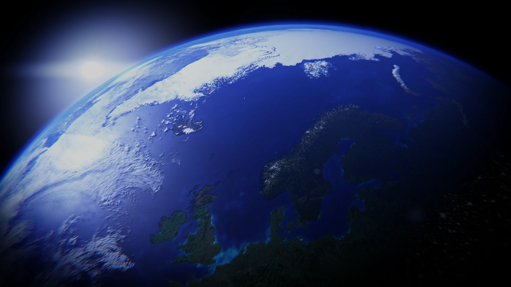
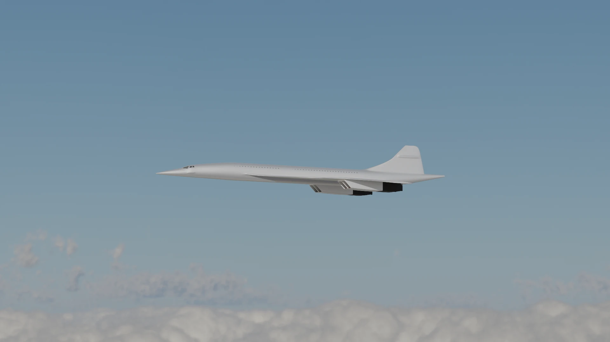
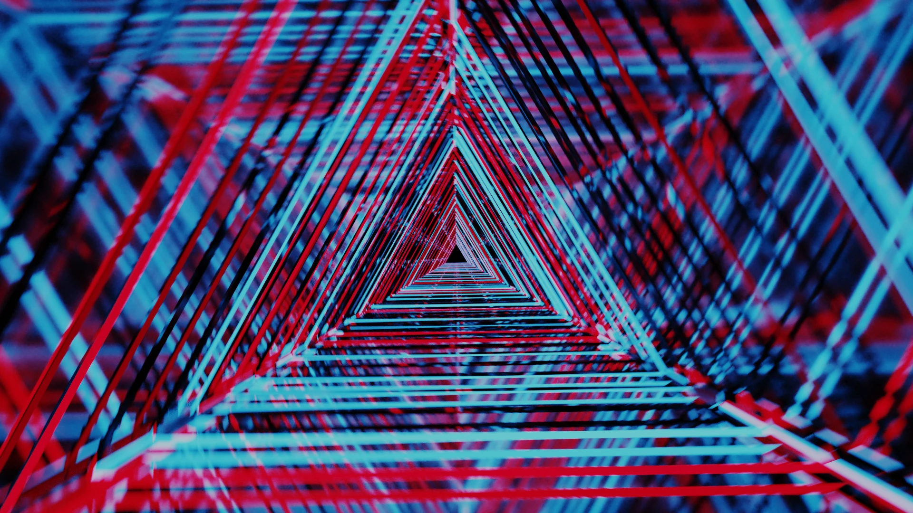
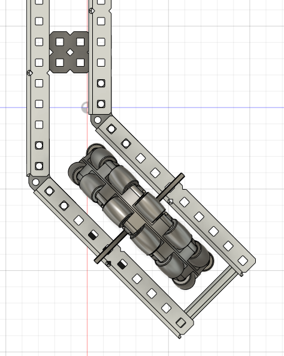
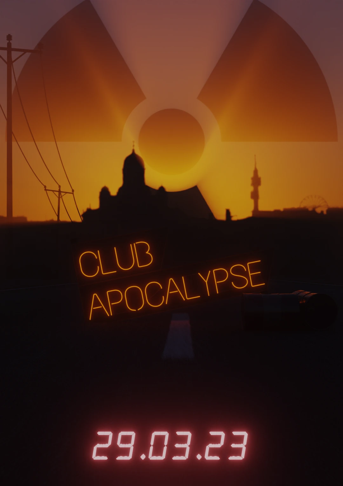

My work
The Earth
Originally created for the purposes of mimicing the Universal Studios intro, this render uses maps provided by NASA to create a photorealistic Earth.
Related technologies

Concorde
A modelling exercise honouring the Aérospatiale/BAC Concorde. The model itself doesn't have many details but looks nice nonetheless!
Related technologies
Rigid body simulation
Animation of glass cubes falling as a metal sphere tumbles down. The sharp ray-traced lighting and large contrast give it a look I enjoy. This specific frame, "0159", is featured as my desktop background!

Related technologies
Abstract mirror
An abstract animation consisting of a flying shot inside triangular mirrors.
Related technologies
Robot CAD model
A CAD model of our robotics team's robot. The model was assembled in Fusion 360 and was used to prototype designs before building them.
Related technologies

Real estate tracker
A Python based web scraper with a PostgreSQL database. The scraper fetches data for many attributes, such as price, location, size and many more for further analysis. It is also able to track price history for individual offerings.
Related technologies


Robot X-drive
A C++ program to control an X-drive based robot remotely. An X-drive features 4 omni-directional wheels, each offset by 90 degrees from each other. This allows movement in any direction. The robot's position is tracked in real time using the position data from each of the motors' integrated encoders.
Related technologies

Robotics club website
A website featuring the robotics teams from around Riihimäki. Our team participated in a website competition and got 2nd place.
Related technologies


Club X poster
A poster for a student party.
Related technologies
Weather app
A simple web application that shows the current weather. Weather data is fetched from the Open Weather Map API. The app uses the HTML5 geolocation API to fetch the user's location. The location can also be selected manually.
Related technologies